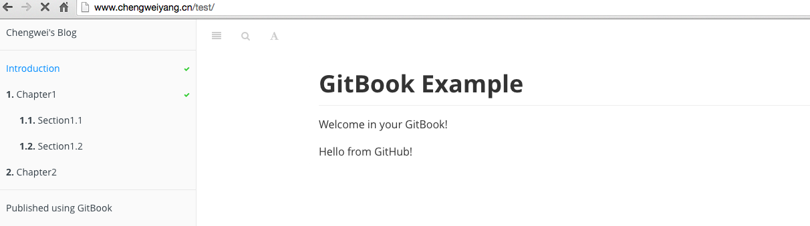

发布到 GitHub Pages
除了能够将书籍发布到 GitBook.com 外，还可以将书籍发布到 GitHub Pages，由于没有找到官方文档，所以这里记录的是我自己正在使用的一种方法。
如果读者不了解 GitHub Pages 为何物，简单说就是一个可以托管静态网站的 Git 项目，支持使用 markdown 语法以及 Jekyll 来构建，或者直接使用已经生成好的静态站点。详细可以参考 GitHub Pages 主页。
由于 gitbook 书籍可以通过 gitbook 本地构建出 site 格式，所以可以直接将构建好的书籍直接放到 GitHub Pages 中托管，之后，可以通过如下地址访问书籍：
<username>.github.io/<project>
例如：这本书中使用的例子 'test' 项目可以通过地址：chengweiv5.github.io/test 来访问。
当访问 chengweiv5.github.io/test 时，会访问 chengweiv5/test 项目的 gh-pages 分支的内容，所以需要为项目创建一个 gh-pages 分支，并且将静态站点内容放入其中。也就是说，test 项目将有如下两个分支：
- master, 保存书籍的源码
- gh-pages, 保存书籍编译后的 HTML 文件
构建书籍
首先，使用 gitbook build 将书籍内容输出到默认目录，也就是当前目录下的 _book 目录。
$ gitbook build
Starting build ...
Successfully built!
$ ls _book
GLOSSARY.html chapter1 chapter2 gitbook glossary_index.json index.html search_index.json
创建 gh-pages 分支
执行如下命令来创建分支，并且删除不需要的文件：
$ git checkout --orphan gh-pages
$ git rm --cached -r .
$ git clean -df
$ rm -rf *~
现在，目录下应该只剩下 _book 目录了，首先，忽略一些文件：
$ echo "*~" > .gitignore
$ echo "_book" >> .gitignore
$ git add .gitignore
$ git commit -m "Ignore some files"
然后，加入 _book 下的内容到分支中：
$ cp -r _book/* .
$ git add .
$ git commit -m "Publish book"
上传书籍内容到 GitHub
现在，可以将编译好的书籍内容上传到 GitHub 中 test 项目的 gh-pages 分支了，虽然这里还没有创建分支，上传和创建会一步完成！
$ git push -u origin gh-pages
Counting objects: 49, done.
Delta compression using up to 4 threads.
Compressing objects: 100% (45/45), done.
Writing objects: 100% (49/49), 1.34 MiB | 131.00 KiB/s, done.
Total 49 (delta 5), reused 0 (delta 0)
To https://github.com/chengweiv5/test.git
* [new branch] gh-pages -> gh-pages
Branch gh-pages set up to track remote branch gh-pages from github.
现在，书籍的内容已经上传到 GitHub 上，所以通过访问 chengweiv5.github.io/test 就可以阅读 test 这本书了！

注意：由于我将 chengweiv5.github.io 重定向到了个人站点 www.chengweiyang.cn，所以可以看到，浏览器中的 URL 自动变成了 www.chengweiyang.cn/test，非常 cool! 关于怎样重定向 GitHub Pages 到个人域名，请参考博客：怎样使用 GitHub Pages 搭建个人站点。